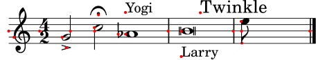
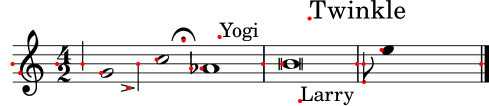
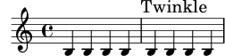
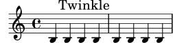
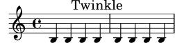
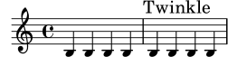
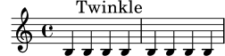
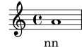
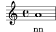

| [ << Retouche de partition ] | [Top][Contents][Index] | [ Modèles >> ] |
| [ < Longueur et épaisseur des objets ] | [ Up: Retouche de partition ] | [ Positionnement des objets > ] |
5.4 Décalages et alignements
LilyPond a besoin de connaître où chacun des objets graphiques devrait se placer. Cette information quant au positionnement est enregistrée sous forme de coordonnées relatives : le positionnement d’un objet se définit relativement au positionnement de son parent. Si l’on travaillait en coordonnées absolues – autrement dit à partir des coins de la page –, préserver la relation spatiale entre les différents objets relèverait du cauchemar.
Chaque objet graphique sait quel est son parent dans l’axe respectif.
Par exemple, un objet Flag (crochet) sait que son parent sur
l’axe des abscisses est un objet Stem (hampe) particulier.
Les coordonnées relatives qui décrivent le positionnement d’un objet
sont enregistrées dans les propriétés d’objet appelées X-offset
et Y-offset. Elles sont exprimées en espace de portée.
X-offset est le décalage horizontal entre le point de
référence d’un objet et le point de référence d’un objet parent sur
l’axe des X (il en va de même pour Y-offset).
Mais qu’est-ce qu’un point de référence ? Il s’agit d’un point spécifique qui définit le positionnement de l’objet. Faisons un peu de géométrie : si l’on doit placer des formes sur un plan, on pourrait bien dire « le coin inférieur gauche de ce carré a pour coordonnées (0, 2) » ou « le centre de ce cercle est en (−1, 3) ». « Coin inférieur gauche » et « centre » seront respectivement les points de référence du carré et du cercle.
L’illustration ci-dessous montre où se place le point de référence de quelques objets particuliers, indiqué par un point rouge – par exemple, la ligne médiane pour les barres de mesure, l’intersection entre la ligne de base et le bord gauche d’une boîte de texte, ou bien encore le centre vertical sur la gauche d’une tête de note.
{
\override NoteHead.style = #'altdefault % for breve
\time 4/2 g'2-> c''\fermata as'1^"Yogi" |
b'\breve _"Larry" |
\mark "Twinkle" e''8 s4.. \bar "|."
}

Une dérogation aux valeurs de X-offset ou Y-offset peut
faire se déplacer des objets relativement à leurs parents :
{
\override Script.X-offset = 3 % fermata, accent
\override TextScript.X-offset = 2 % "Yogi", "Larry"
\override Stem.X-offset = -2
\override Score.RehearsalMark.Y-offset = 5 % "Twinkle"
\override NoteHead.style = #'altdefault % for breve
\time 4/2 g'2-> c''\fermata as'1^"Yogi" |
b'\breve _"Larry" |
\mark "Twinkle" e''8 s4.. \bar "|."
}

Vous n’aurez pas manqué de constater que l’objet Flag s’est
déplacé comme son parent Stem.
Note : Modifier X-offset ou Y-offset ne produit pas
toujours les effets escomptés, voir Alignement des objets.
Venons-en maintenant à une autre paire de propriétés : X-extent
et Y-extent. Toutes deux sont constituées d’une paire de nombres,
que LilyPond appelle en interne un intervalle, et enregistrent la
taille relative d’un objet par rapport à son point de référence. Par
exemple, un X-extent égal à (-1 . 4) signifie que le bord
gauche du grob est à 1 espace de portée sur la gauche de son point
de référence, et son bord droit à 4 espaces de portée sur la droite du
point de référence, pour une largeur totale de 4 - (-1) = 4 + 1 =
5 espaces de portée. Les deux nombres d’une étendue peuvent être
positifs ; par exemple, (2 . 3) est une étendue tout à fait valide :
cela signifie que l’intégralité du grob est à droite de son point
de référence, et que la largeur de ce grob est de 3 - 2 =
1 espace de portée. De la même manière, les deux nombres pourraient être
négatifs ; bien que peu probable, cette situation ne perturberait pas
LilyPond. Dans la plupart des cas, du moins pour X-extent, le
premier nombre est 0, ce qui signifie que le point de référence est sur
le bord gauche de l’objet graphique.
L’exemple précédent illustre ceci tout à fait : le bord gauche aussi bien de
l’accent que du point d’orgue est à gauche du point de référence ; il en
va de même pour la tête de la brève (nous avons préféré le style de tête
'altdefault pour plus de visibilité).
Supposons maintenant que nous voulions positionner un objet
RehearsalMark de telle sorte que son bord droit s’aligne sur une
barre de mesure (par défaut, LilyPond centre horizontalement la marque
de repère). Avec un X-offset égal à zéro, c’est à dire que son
point de référence s’aligne sur le point de référence de son parent, à
savoir la barre de mesure dans le cas présent, le grob
RehearsalMark se place comme ceci :
{ \override Score.RehearsalMark.X-offset = 0 b4 b b b \mark "Twinkle" b b b b }
Il nous faut donc le décaler. N’oublions pas la signification du second
nombre de X-extent : il s’agit de la position du bord droit de
l’objet relativement à son point de référence. Si nous soustrayons cette
valeur à zéro, nous devrions obtenir le décalage horizontal voulu :
{ % value -10.4 found by trial and error \override Score.RehearsalMark.X-offset = -10.4 b4 b b b \mark "Twinkle" b b b b }
Et si nous voulions centrer un objet sur le point de référence de son parent ? Rien de plus simple : calculons le déplacement entre le point de référence de cet objet et le centre de son étendue. Quelques exemples :
-
X-extent= (-2 . 2)
⇒X-offset= 0 - 0 = 0 -
X-extent= (0 . 4)
⇒X-offset= 0 - (0 + 0.5 * 4) = -2 -
X-extent= (-2 . 4)
⇒X-offset= 0 - ((0.5 * -2) + (0.5 * 4)) = 0 - (-1 + 2) = -1
Une fonction avec un nom à rallonges est déjà disponible et capable de réaliser ces calculs pour nous :
\override NomGrob.X-offset = #ly:self-alignment-interface::x-aligned-on-self
à laquelle il suffit d’indiquer l’alignement désiré :
\override NomGrob.self-alignment-X = #RIGHT
Ce code demande à la procédure de trouver la distance entre le point de référence de l’objet et son bord droit, puis de l’utiliser comme décalage horizontal, ce qui aura pour résultat que l’objet sera aligné par sa droite.
Si donc on change l’étendue d’un objet, on affecte la manière dont il sera aligné – parce que LilyPond pensera que les dimensions de l’objet sont différentes :
{ \override Score.RehearsalMark.X-extent = #'(0 . 8) \override Score.RehearsalMark.self-alignment-X = #RIGHT b4 b b b \mark "Twinkle" b b b b }
Bien sûr, si l’étendue d’un objet est vide (sa paire ne forme pas
un intervalle), les procédures telles que x-aligned-on-self
n’auront aucune information quant aux dimensions de cet objet et ne
pourront donc pas calculer de décalage (elles retourneront simplement la
valeur 0). Autrement dit, un grob dont l’étendue est vide ne peut
« s’aligner » que sur son point de référence puisqu’aucune autre
information n’est disponible pour l’alignement :
{ \override Score.RehearsalMark.X-extent = ##f b4 b b b \mark "Twinkle" b b b b }
Notez bien qu’une étendue vide et une étendue égale à zéro résultent en un même positionnement :
{ \override Score.RehearsalMark.X-extent = #'(0 . 0) b4 b b b \mark "Twinkle" b b b b }
Néanmoins, une étendue vide (ou nulle, ou autre) ne nous empêche pas de placer l’objet à l’endroit où nous le souhaitons – on doit juste se passer des procédures d’alignement. On peut toujours spécifier le décalage désiré, et tout fonctionne comme à l’accoutumée :
{ \override Score.RehearsalMark.X-extent = ##f \override Score.RehearsalMark.X-offset = -10.4 b4 b b b \mark "Twinkle" b b b b }
Il y a encore quelque chose à garder à l’esprit : le parent d’un grob a, lui aussi, ses propres dimensions, et nous devons en tenir compte. Par exemple, si nous disons
{ a'1 } \addlyrics { \override LyricText.X-offset = #ly:self-alignment-interface::x-aligned-on-self \override LyricText.self-alignment-X = #CENTER nn }
l’objet LyricText sera centré, mais sur le point de
référence de son parent – c’est à dire que le centre de la syllabe
s’alignera sur le point de référence de la tête de note. Si nous voulons
que le centre de l’objet LyricText s’aligne avec le centre de son
objet parent NoteHead, il nous faut recourir à une autre
procédure : aligned-on-x-parent. Son comportement est similaire à
x-aligned-on-self mais, en plus de calculer un décalage sur la
base de l’étendue d’un objet, elle utilise aussi l’étendue de l’objet
parent pour déterminer les positions relatives au centre de l’étendue :
{ a'1 } \addlyrics { \override LyricText.X-offset = #ly:self-alignment-interface::aligned-on-x-parent \override LyricText.self-alignment-X = #CENTER nn }
| [ << Retouche de partition ] | [Top][Contents][Index] | [ Modèles >> ] |
| [ < Longueur et épaisseur des objets ] | [ Up: Retouche de partition ] | [ Positionnement des objets > ] |